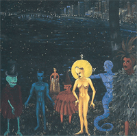

| For
Sisi
Do You Remember
I Did Not Follow
In
The Depth Of The Night
by Dorus Vrede
Sweet
Lianas / Lanes Douches
by Joseph Zobel
Koromantyn
Girl
by June Spaulding
Silk Cotton
Tree
Dream Season
by Hazel Simmons-McDonald
Next-Door
Patient / Pashent aki banda
My
Love, A Ribbon In The Wind/ Mi Amor, Un Sinta
by Nydia Ecury
Title Deed
Visit and
Fellowship
Direction II
by Lasana Sekou
Under
The Spell Of A Max Ernst Sky
Vampire
Fleeing Approaching Light
by Felix de Rooy
Together
by Gibi Bacilio
Sycorax,
Requiem
by John Keene
Lemon Tree
by Shara McCallum
|
The
Charm Of Repeating Islands
The
Maker Of Mango Marmalade
Latin
Jazz Burial Borinquen Style
Raspita,
Or Doña Inez Blushes
Tio Anibal
En
el Jardin de los Espejos Quebrados
by Virgil Suarez
Poinsetta
by Opal Palmer Adisa
A
Saltwater Negro Speaks/ Demande Moi
by Ernest Pepin
Dear Brer
Rabbit
by Winston Farrell
Tough Act
Helen
by Carol Bourne
Full Moon
by Gerthie Owtram
Example
Manchineel
The Mango Virgin
by Shayla Hawkins
I Don't
Speak French
by Isabelle-Pierre Rollin
I Glad Fuh
De Res
by Deanne Kennedy |

Cover from Vol 1 No 2,
© Eduoard Duval-Carríe |
Return
to Old Lombe
by Dorus Vrede
Raven In
My Arms
by Monique S Simon
The Eleven
Plus
by Deanne Kennedy
The
Many Faiths Of Sir Wilfred Knight
by Robert Edison Sandiford |